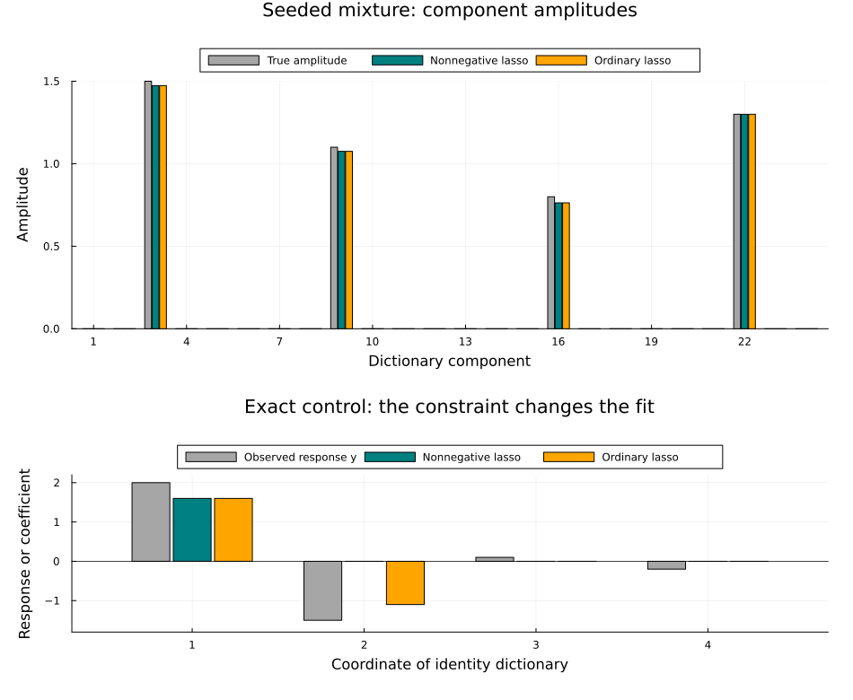

Nonnegative sparse regression
A spectrum, image patch, or chemical mixture can be described as a sum of known components. Its coefficients are amounts: a negative amount has no physical meaning. Nonnegative sparse regression estimates a small collection of positive contributions. We first fit a seeded mixture and plot the component amplitudes. An exact control below shows why fitting ordinary lasso and clipping its answer is not the estimator.

A sparse mixture model
Write $y = X\beta^\star + \varepsilon$, where each column of $X$ is a known component, $\beta^\star \geq 0$ contains its amplitude, and $\varepsilon$ is measurement noise. We estimate
\[\widehat\beta = \arg\min_{\beta\geq0} \left\{\frac{1}{2n}\|y-X\beta\|_2^2 + \lambda\sum_{j=1}^p\beta_j\right\}.\]
The squared error rewards reconstruction; $\lambda>0$ encourages a short list of components and shrinks their amplitudes. NormL1Nonneg includes the domain constraint in this objective. This example uses dense Float64 data and proximal gradient descent. Supported problems gives the precise API limits.
using LinearAlgebra, Printf, Random, ProximalBase, ProximalSolvers
rng = Xoshiro(389)
n, p = 160, 24(160, 24)Positive, moderately overlapping dictionary columns, each with squared norm n.
X = rand(rng, n, p) .^ 3
for j in axes(X, 2)
X[:, j] .*= sqrt(n) / norm(X[:, j])
end
beta_true = zeros(p)
beta_true[[3, 9, 16, 22]] = [1.5, 1.1, 0.8, 1.3]
y = X * beta_true + 0.12 * randn(rng, n)
lambda = 0.06
f = (1 / n) * LeastSquaresLoss(y, X)
g = NormL1Nonneg(lambda)
beta = zeros(p) # The starting point must be feasible.
options = ProximalOptions(maxiter=20_000, ftol=0, xtol=1e-14, gradtol=1e-9,
allow_f_increases=true)
result = solve!(beta, f, g, ProximalGradientDescent(), options)
ordinary = zeros(p)
ordinary_result = solve!(ordinary, f, NormL1(lambda), ProximalGradientDescent(), options)Results of Optimization Algorithm
* Algorithm: Proximal Gradient Descent
* Minimizer: [0.0,0.0, ...]
* Minimum: 2.886174e-01
* Iterations: 66
* Convergence: true
* |x - x'| < 1.0e-14: false
|x - x'| = 3.72e-10
* objective-change test: disabled (ftol = 0)
|f(x) - f(x')| / |f(x)| = 0.00e+00
* |g(x)| < 1.0e-09: true
|g(x)| = 2.69e-10
* objective increased at the last iteration: false
* Reached Maximum Number of Iterations: false
* Reached a limit on the number of calls: false
* Stopped at numerical stagnation: false
* Backtracking steps: 74
* f(x) calls: 141
* ∇f(x) calls: 67
* prox calls: 74
A small exact control makes the effect of the constraint visible in the figure.
figure_control_y = [2.0, -1.5, 0.1, -0.2]
figure_control_X = Matrix{Float64}(I, 4, 4)
figure_control_f = (1/4) * LeastSquaresLoss(figure_control_y, figure_control_X)
figure_control_beta, figure_control_ordinary = zeros(4), zeros(4)
solve!(figure_control_beta, figure_control_f, NormL1Nonneg(0.1), ProximalGradientDescent(), options)
solve!(figure_control_ordinary, figure_control_f, NormL1(0.1), ProximalGradientDescent(), options)
@assert isapprox(figure_control_beta, max.(figure_control_y .- 0.4, 0); atol=1e-8)
@assert isapprox(figure_control_ordinary, sign.(figure_control_y) .* max.(abs.(figure_control_y) .- 0.4, 0); atol=1e-8);Component amplitudes
The upper panel shows actual fitted coefficients alongside the generating amplitudes. Shrinkage lowers several signal amplitudes; ordinary and constrained lasso give similar answers on this positive mixture. The lower panel makes their difference visible on the exact identity-dictionary control: gray bars are the observed response y, not true component amplitudes. Ordinary lasso retains a negative coefficient; the constrained fit cannot. Both fits shrink the positive response. The closed forms and the role of correlation are explained below. Plotting runs in the documentation environment; ordinary script execution and tests need no plotting package. To reproduce the figure, build docs/make.jl using the repository's documentation environment.
using Plots
component_plot = bar(collect(1:p) .+ [-0.24 0 0.24], hcat(beta_true, beta, ordinary);
label=["True amplitude" "Nonnegative lasso" "Ordinary lasso"],
xlabel="Dictionary component", ylabel="Amplitude", color=[:gray65 :teal :orange],
title="Seeded mixture: component amplitudes", legend=:outertop, legendcolumns=3,
bar_width=0.22, xlims=(0.3, p+0.7), xticks=1:3:p)
control_plot = bar(collect(1:4) .+ [-0.24 0 0.24],
hcat(figure_control_y, figure_control_beta, figure_control_ordinary);
label=["Observed response y" "Nonnegative lasso" "Ordinary lasso"],
xlabel="Coordinate of identity dictionary", ylabel="Response or coefficient",
color=[:gray65 :teal :orange], title="Exact control: the constraint changes the fit",
legend=:outertop, legendcolumns=3, bar_width=0.22, xticks=1:4,
xlims=(0.3, 4.7), ylims=(-1.8, 2.2))
hline!(control_plot, [0]; color=:black, linewidth=0.7, label=false)
mixture_figure = plot(component_plot, control_plot; layout=grid(2, 1; heights=[0.6, 0.4]),
size=(950, 780), margin=5Plots.mm)
savefig(mixture_figure, "nonnegative_lasso.svg")
nothingCheck the optimization independently
With $d = X^T(X\widehat\beta-y)/n$, constrained optimality requires $d_j+\lambda=0$ at positive coefficients and $d_j+\lambda\geq0$ at zero coefficients. The second condition allows a positive derivative at the boundary: moving left would improve the unconstrained objective but violates nonnegativity. We compute the largest violation directly, along with feasibility and the objective. These computations do not call a solver residual or ProximalBase's KKT function.
function independent_nonnegative(X, y, beta, lambda)
n = length(y)
gradient = X' * (X * beta - y) / n
residual = maximum(eachindex(beta)) do j
beta[j] > 0 ? abs(gradient[j] + lambda) : max(-(gradient[j] + lambda), 0)
end
objective = sum(abs2, y - X * beta) / (2n) + lambda * sum(beta)
(; objective, residual, minimum_coefficient=minimum(beta))
end
check = independent_nonnegative(X, y, beta, lambda)
scale = max(lambda, maximum(abs, X' * y) / n)
@assert check.minimum_coefficient >= 0
@assert check.residual / scale <= 1e-7
@assert isapprox(check.objective, result.minimum; rtol=1e-12)Validate the comparison as well, with the symmetric lasso KKT conditions.
ordinary_gradient = X' * (X * ordinary - y) / n
ordinary_kkt = maximum(eachindex(ordinary)) do j
iszero(ordinary[j]) ? max(abs(ordinary_gradient[j]) - lambda, 0) :
abs(ordinary_gradient[j] + lambda * sign(ordinary[j]))
end
@assert ordinary_kkt / scale <= 1e-7
@assert isapprox(ordinary_result.minimum,
sum(abs2, y - X * ordinary)/(2n) + lambda * sum(abs, ordinary); rtol=1e-12)
selected = findall(>(1e-6), beta)
println("True components: ", findall(!iszero, beta_true))
println("Selected components (amplitude > 1e-6): ", selected)
@printf("Objective %.6f; relative reconstruction error %.4f; KKT/scale %.2e; minimum coefficient %.1f\n",
check.objective, norm(y-X*beta)/norm(y), check.residual/scale, minimum(beta))True components: [3, 9, 16, 22]
Selected components (amplitude > 1e-6): [3, 9, 16, 22]
Objective 0.288617; relative reconstruction error 0.0420; KKT/scale 8.95e-11; minimum coefficient 0.0The threshold 1e-6 is a reporting choice, not a statistical significance level. Noise, correlated dictionary columns, and the selected penalty can change which components enter. We report the selected support instead of asserting exact recovery. The numerical assertions check optimization accuracy, not scientific identification.
An exact control: the constraint changes the answer
If $X=I_n$, coordinates separate. The constrained answer is $\widehat\beta_j=\max(y_j-n\lambda,0)$; ordinary lasso gives $\operatorname{sign}(y_j)\max(|y_j|-n\lambda,0)$. We verify both Float32 and Float64, with tolerances matched to each precision.
for T in (Float32, Float64)
control_y = T[2, -1.5, 0.1, -0.2]
control_X = Matrix{T}(I, 4, 4)
control_lambda = T(0.1)
control_f = (one(T)/T(4)) * LeastSquaresLoss(control_y, control_X)
control_beta, control_ordinary = zeros(T, 4), zeros(T, 4)
control_options = ProximalOptions(maxiter=2000, ftol=0, xtol=1e-12,
gradtol=T === Float32 ? 1e-5 : 1e-10, allow_f_increases=true)
control_result = solve!(control_beta, control_f, NormL1Nonneg(control_lambda),
ProximalGradientDescent(), control_options)
solve!(control_ordinary, control_f, NormL1(control_lambda),
ProximalGradientDescent(), control_options)
tolerance = T === Float32 ? 5e-5 : 1e-8
@assert isapprox(control_beta, max.(control_y .- 4control_lambda, 0); atol=tolerance)
@assert isapprox(control_ordinary,
sign.(control_y) .* max.(abs.(control_y) .- 4control_lambda, 0); atol=tolerance)
@assert control_ordinary[2] < 0
control_check = independent_nonnegative(control_X, control_y, control_beta, control_lambda)
@assert control_check.minimum_coefficient >= 0
@assert control_check.residual <= tolerance
@assert isapprox(control_result.minimum, control_check.objective; rtol=tolerance)
endIn this orthogonal control, clipping ordinary lasso happens to give the constrained answer. That identity does not extend to correlated columns: changing one coefficient changes the residual seen by the others. Fit the constrained objective directly.
What we learned
Nonnegativity encodes a scientific assumption about contributions; sparsity expresses a preference for using few components. The fitted amplitudes are penalized and biased toward zero, and similar dictionary columns can compete for the same signal. A good reconstruction does not establish a unique physical explanation. The dictionary and nonnegativity assumption must be scientifically justified; choosing lambda, model checking, and uncertainty assessment need additional data or validation.
This tutorial fits no intercept and does not center the positive dictionary, since centering would change its component interpretation. A baseline, if needed, must be modeled deliberately; the package does not fit an unpenalized intercept here.